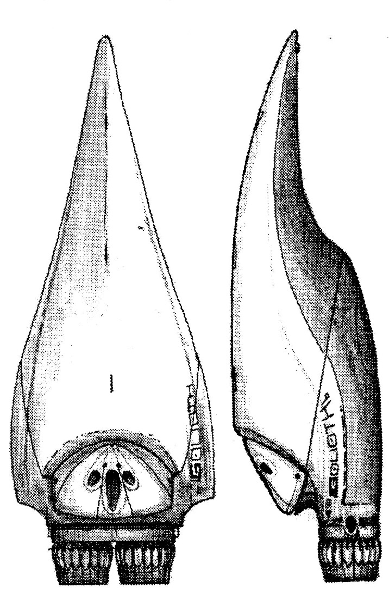
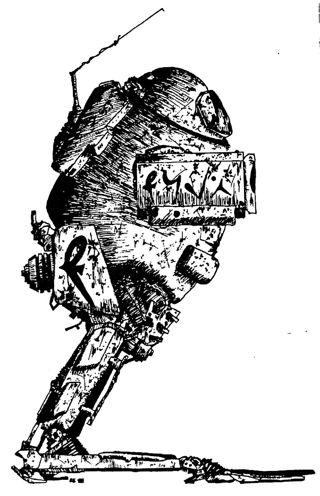

Tools & Miscellaneous
Altitude Rocket
An altitude rocket is a simpler, smaller, and more portable version of larger kindred used to catapult heavy payloads offworld. At maximum capacity, it can shuttle about 250kg or 3.0 cubic meters of cargo to any desired inclination of low planetary orbit (LoPO). It's proper setup and launch must be handled by someone with a knowledge of astronautics (SKILL DIFF 30), and takes approximately 120 - SKILL APT minutes. A small locator is included to allow the user to retrieve the reuseable engine section, which parachutes to earth 15 minutes after launch about 1:100sd km downrange (non atmospheric flights can apply retro thrusters, and land 1:10sd km downrange). A rocket is fueled by a cylindrical, 110 kg hydrogen cell and can be refilled at any standard fuel station or by a hydrocracker. The guidance electronics are powered by a batt A, which must be replaced every 23 flights. Living things cannot usually be placed in an altitude rocket, as the high takeoff velocity will ultimately crush the occupant. Notable exceptions are Mahendoshi and Tanaian individuals who, when cushioned, can survive with only mild discomfort.

Air Tank
Standard air tanks use a oxygen-helium breathing mix which at one atmosphere will last approximately six hours. Empty tanks weight 4 Kg including the detachable face mask and every hour of pressurized mix weighs .7 kg (these weights and times remain the same for Eebekian Nitro helium versions). Somewhat larger 12 and 24 hour tanks can be obtained at twice the empty mass and cost. Refills cost 32 dits per tank hour and are usually available wherever air tanks themselves are found. Refilling with regular Oxy-nitrogen costs one fifth as much but weighs 1.9 kilograms per tank hour (using standard air is sometimes necessary when expensive helium is unavailable). Note: some races voices become harmlessly squeak when breathing the Helium mix.
Climbing Gear
This is an optional kit for the scale gun, but it can be used seperately. Containing various types of attachment hardware, pitons and clips as well as 300 m of rope, the kit is essential for many type of climbing.
Compass (or Geocompass)
Containing a small telescope, map slate, a magnetic compass this is the quintessential exploration device. Data regarding a particular can planet be downloaded into the geocompass including various planetary constants and rough surface maps for orienteering. The surface maps can be recalled onto the display and the stylus can be used to record information on position, destination, and other data. The telescope, when used in conjunction with the onboard computer can measure the position of stars in the night sky and thereby fix the current position on the surface of a globe. This process is aided by the magnetic compass included on the face and can be accurate to within 10 meters.
Disguise Kit
All the basics for disguise are contained in this hard organo-polymer case small enough to fit in a large pocket. Including only the most important elements such as face shades, to tint the colour of the skin, a scar and blemish cover up stick, and compounds that can mimic scars or blemishes very convincingly. In a tight spot this little kit can be the difference between life and death, so don't leave home without it!
Diving Gear
Assorted regulators, flippers, and weights useful in underwater diving.
Diving Tow
A motorized torpedo shaped device that can pull a human sized person through water (or any other liquid), most models include a compass, sonar, and a computer navigation system.
Excavation Tools
Assorted picks, shovels, and buckets useful in the digging and hauling of dirt or sand.
Fire Extinguisher
Containing a balance of mixed gases and solids an extinguisher can put-out any type of fire - electrical, grease, or chemical. The extinguisher is 30 cm in length and 10 cm in diameter, and when used properly it can extinguish and area approximately 5m square. The contents are harmless unless taken in huge doses and can be cleaned from any surface with mild soap and water.

Floater Pack
The pack, containing anti-gravity generators, can the hold wearer over a particular spot, using small maneuvering jets, in winds less than 10 Km/h. A maneuver pack is needed for winds of higher speeds.
Food Processor
Turns organic matter into edible wafers (race specific), and with vitamin supplements can provide complete, yet bland nutrition.
G-Chute
A G-chute contains several anti-gravity generators that will slow the rate of descent of any falling object. Installed in most beanstalks and low space stations as emergency evacuation devices, 1 G-chute can be used by 3 people in life- bubbles (or Vac-suits) to descend from orbit onto a planet's surface. The maximum weight a chute can decelerate trough re-entry into an atmosphere is 300 kgs, exceeding this will result in a very hot ride into the atmosphere and possibly burn-up! The same weight limit applies within an atmosphere, but the more weight to be decelerated the higher the resulting final velocity. So, if the load can take a rough landing up to 400 kgs can be decelerated. A G-chute can only nullify the force of gravity, it cannot carry objects upward unless they have some means of lift or propulsion. A standard parachute and safety chute are also included as an emergency backups.
Gill
Used in underwater diving, a gill looks like a large semi-opaque sac with the texture of extremely firm gel. Produced to extract gases from the water this sac will filter out breathable air for inhalation in exchange for expelled gases. Most gills filter out nitrogen and oxygen in sufficient concentrations, and a few can filter out just Oxygen. The first type can be used for dives of up to 50 meters, just as a normal SCUBA tank might be used, but with no limitation due to air supply exhaustion during decompression. The latter type can be used with a compressed helium tank and a rebreather for very deep dives of up to 350 meters (with the diver in a heated suit).
Hand Light
Packed in a small impact resistant case this light fits in the palm of a Human or Eebek hand. The illumination produced by a metal halide bulb is focused by a highly polished reflector and interchangeable lenses. The two lenses, which provide either a tight, medium, or diffuse beam, are fixed to the case and flip down when needed.
Hand Thruster
Essentially a compressed air cylinder, it will yield 300 Newtons of force for 30 seconds. The canister, 15 cm long and 5cm in diameter, has a control nozzle which is very effective for direction of the force, and at allowing short timed bursts. Especially useful in zero-g environments the hand thruster can also be used to move hovering devices (hover pallets, null-G cargo netting, etc.).
Heat Disk
Activated by cracking the disk down the middle this soft and flexible, disk will provide temperatures of 70-180°C for up to 12 hours a use. The energy is put back into the disk by heating it (boiling is a common method) then the disk is recharged and ready for reuse. There are disposable versions that are activated by water and are spent after 100 uses, necessary if there is not a handy supply of heat.
High Tech Toolkits
Available for Computers, Electronics / Photonics, Robotics and Weaponry - these kits contain the basic tools necessary for maintenance and upkeep of their specific technologies. The tools may also be used for slight modification and adaptation of the devices they normally service, but not complex tasks.
Hydrocracker
As the name implies this device "cracks" water into hydrogen and oxygen gas for use in fuel-cells. The process is electrochemical in nature using slightly acidic water to allow increased ion flow. The cracker has standard couplings to allow the recharge of most cells. Recharge can be completed in 4, 1, ⅕ of an hour depending on the size of the cracker.
Jack / Powerbrace
A hydraulic ram complete with fluid reservoir, pump and batt power source, the power brace can lift or hold up to 20 tonnes. The entire pumping mechanism including battery is detachable, leaving only the ram and the reservoir in place. The pumping mechanism can then be used to pump-up another ram (available for ¼ of the unit cost).
Lantern / Flood Light
Similar to the hand light this larger version can illuminate and area of 300 sq meters. The whole light is cylindrical in a molded air and water tight case. The base and a top are firm supports for the central section which produces and focuses the light. Also with tight, medium, and diffuse beams the two lenses are mounted as a cylindrical shell around the central reflectors. A sturdy handle is also molded in the case.
Life Bubble
A synthetic balloon (with portholes) that can opened and sealed to envelope a person (racially specific), it can support life up to 4 hours during an emergency transfer or decent. Basic ventilation and heating devices are included.
Life Jacket
The standard survival equipment for cold water environments this device can keep an individual afloat indefinitely. Lighter Using the flexures of a piezoelectric crystal, this pen sized device produces sparks.
Locksmith Kit
21 The necessities for the practice of open locks, the possession of this kit is restricted. Two types are available for either mechanical or electronic locks.
Low-tech tool kits
Both the mechanical and engineering kits contain the basic tools necessary to examine, diagnose, and rectify various problems that can occur within the two fields.
Maneuver Pack
The planetary contains anti-gravity generators like the floater pack, but maneuver and propulsion systems are included. The Zero-G model just contains the maneuver and propulsion systems. Once strapped onto the the user, the direction and speed can be controlled with a joystick and lever through almost any environment - including fluid.
Moisture Canteen
Shaped like a regular canteen, with a hard exterior surface, this one has tough yet permeable patches evenly spaced on its surface. The patches are completely fused to the hard exterior material, and they are what make this more than a water bottle. The patches are Bio-engineered membranes that allow only water to enter the body of the flask. A Moisture canteen can actually draw the humidity out of the air, and remain full under most conditions (except deserts at day and empty space). This canteen will draw up 4l per hour depending on relative humidity.
Null-G Cargo Netting
Used to contain and stabilize a large load null-G cargo netting has anti-gravity generators to make the encompassed mass effectively nil. Able to encircle up to a 10 meter cube it has proved to be extremely useful in the bustling starports of the Alliance. Both the cargo handlers and the general public have been spared the ravages of cargo carrying. Even in this day and age hauling your bags around the starport between flights drains a person.
Nutrijuice (1l)
"the complete meal" (racially specific), this clear syrupy mixture is balanced to provide all the nutrition necessary in the flavor(s) of choice. Packaged ia a tube this has become the in-flight meal on all space liners that don't have synthetic gravity or who don't use it to save money. 1l is sufficient for 1 week of meals.
Pack Frame
Standing about 2 meter tall this heavily reinforced organo-polymer frame can have up to five other packs strapped onto it. This frame can then be strapped onto the wearer for comfortable hauling of many packs.
Parawing
Resembling a 20th century sport parachute this model can stiffen-up allowing the pilot to guide it by shifting (the center of gravity) his weight. Constructed of soft material the square parawing has vents in front that allow air between the upper and lower layers of the wing, keeping the wing inflated. When the control cords are pulled the support wires, material, and internal structure becomes rigid and allows control, and when released it acts just like a parachute again.
Preserves
Packaged in air and watertight cases they can be any filled with any type of meal, that will remain fresh for 4 months
Pressure Tent
A two wall design that can hold an atmosphere this tent will supply basic life support. The tent is a free standing dome type that will ventilate, heat, and cool the occupants in various environments.
Power Suits
Introduction
Essentially these are hydraulic suits used in cargo loading and very strenuous work that requires excessive strength. Mining companies often provide these where the ore is particular hard to mine, and the miners require extra strength. They typically surround the wearer either in a contained atmosphere or cage depending on model, using their arms and legs to guide their more powerful hydraulic counterparts. This typically reduces agility which may tip over the suit if the user over extends the reach.
Santana Industrial Servo-loader
Mainly used for industrial loading, these are also used as an assist to workers in heavy construction. Prototyped by Santana they are now the manufacturers and sell to all heavy industry. The Servo Loader encloses the user in a cage it therefore provides no atmospheric or other life support.
P-41 Iguana
Manufactured for the space construction these suits include full life support for the user. Equipped with maneuvering thrusters and automatic station-keeping systems these suits can be used in free space or in light gravities.
Reducer Mask
Designed to cut the inhaled pressure and help the wearer to breath in pressures up to 5 atmospheres. With additions of supplementary air tanks to increase atmosphere contents to necessary partial pressures, it can allow normal breathing.
Respirator
Essentially a self-contained breathing device, that can assist or assume all normal function.
Scale Gun
INSERT DESCRIPTION HERE
Servo-skeleton
A frame-like exoskeleton that will assist the wearer in lifting and carrying loads up to 500 kgs. Strapped onto the user the skeleton senses muscle control signals and responds with hydraulic pumps and valves to supplement the users strength.
Thermal Blanket
Fabricated from the latest materials a thermal blanket can conserve up to 95% of a wearer's body heat. The standard blanket is 3 x 4 meters but can be ordered any size.
Visor
These glasses will shield the wearers eyes from harmful doses of various type of radiation.